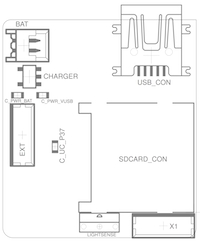
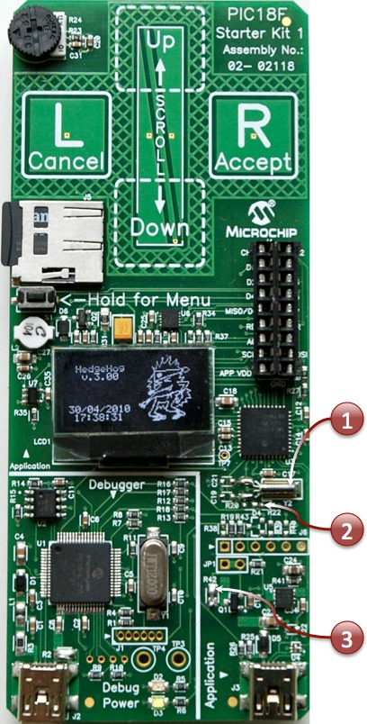
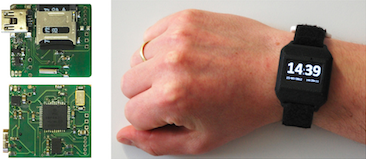

HedgeHog
A tough activity logger that hibernates and occasionally presents lots of spikes
This project is maintained by kristofvl
- Intro
- Make your own
- How they work
- Videos
- Publications
- Contributors
Welcome to the HedgeHog Project
... an Open Source Sensor
 The HedgeHog is
a sensor platform originating from our experiences within the
Porcupine project. Our aim is to build an open source hardware
and software for a wearable motion data logger to be deployed
in large-scale activity recognition experiments.
The HedgeHog is
a sensor platform originating from our experiences within the
Porcupine project. Our aim is to build an open source hardware
and software for a wearable motion data logger to be deployed
in large-scale activity recognition experiments.
... beyond an Activity Logger
Going further than just logging intensity of activity, the HedgeHog's main strength lies in its set of algorithms: it allows to record motion data in detail and over longer stretches of time, making it the perfect tool as an activity recorder that captures what its wearer is doing.
... yet Cheap and Reliable
Although the HedgeHog is primarily a prototyping and research tool, its simple design means that it can be deployed outside the laboratory, and is easy and affordable enough to produce in larger quantities.
Make your own
♦ Step 1. Building the hardware
--> use the hardware design files
to order a populated circuit board
--> using the STL files
to 3D print the enclosure
--> which straps we recommend and where
to order
using
the PIC18F starter kit to test and program

The HedgeHog is based around the PIC 18F46j50 from Microchip. The manufacturer has made a starter kit available for this microcontroller, which shows off its USB capabilities, on a board that also houses an SD card slot, an accelerometer (the BMA150 from Bosch), some capacitive touchpad buttons and a 128x64 monochrome OLED display. This setup is fairly similar to that of the HedgeHog's, except that the latter has a different accelerometer, is fitted with power circuitry for a Li-Po battery, and fits on a smaller -- more wearable -- board without the touchpad buttons. The Starting Kit can be used as an off-the-shelf testing platform though, since it is available for about 50€ from Farnell (order number 1737240) and other suppliers.
In order to run the HedgeHog code on this board, three minor modifications need to be made (to be soldered):
1. Add a 32,768 kH clock crystal in the provided space on the board (marked with Y2). Optionally, one can add the two resistors.
2. Remove resistor R20 (just below the crystal) in order to remove the soft start circuit from pin RC1 of the microcontroller (as this interferes with the RealTime Clock's crystal from the previous step).
3. Add a zero Ohm resistor (or just a piece of wire) to the contacts of the element on the board marked R42. This allows all other components other than the microcontroller on the board to be powered as well straight away (bypassing the soft start circuit).
For complete compatibility with the HedgeHog board, one could replace the BMA 150 accelerometer with the ADXL345, and add temperature and light sensors. An easier way is to use the appropriate "Hardware Profile" header file in the HedgeHog project, which adapts to the Bosch accelerometer and other small hardware differences.
Datasheets:
* PIC18F46J50 (Microchip)
* BMA150 (Bosch)
* PIC18 Starter Kit 1 (DM180021) (Microchip)
♦ Step 2. Building the software
--> building
the code for the firmware, and programming the HedgeHog
--> how to obtain and build
the code for the data analysis
♦ Step 3. Record and explore the data
--> how to start, use, and access the
data
--> how to configure your HedgeHog
How they work
The HedgeHog modules are small and simple: they depend on a low-power microcontroller with embedded USB and realtime clock units, which is digitaly connected to a 3D accelerometer and a micro-SD card. They can also have extra sensors to measure environmental conditions. A HedgeHog can operate for weeks from a small rechargeable battery.
By adding a plastic enclosure to protect the electronics from everyday use, and by strapping it to the dominant wrist, motion patterns can be recorded that can lead to the detection of physical activities.
The data is afterwards downloaded via a USB cable (which also recgharges the battery) and can then be analysed for activities. An example of the data stream that is produced by the HedgeHog over months of use is illustrated on this page.
Where they are used
...
Videos
Publications
- Eugen Berlin and Kristof Van Laerhoven, "Detecting Leisure Activities with Dense Motif Discovery", 14th ACM International Conference on Ubiquitous Computing (UbiComp 2012), Pittsburgh, PA, USA, ACM Press, 09/2012, In Press [oral, 19.3% acceptance rate], Google Scholar, PDF
- Marko Borazio and Kristof Van Laerhoven, "Combining Wearable and Environmental Sensing into an Unobtrusive Tool for Long-Term Sleep Studies", 2nd ACM SIGHIT International Health Informatics Symposium (IHI 2012), Miami, Florida, USA, ACM Press, 01/2012, [oral, 18% acceptance rate], Slides (pdf), Google Scholar, PDF
- Christian Seeger, Kristof Van Laerhoven, Jens Sauer and Alejandro Buchmann, "A Publish/Subscribe Middleware for Body and Ambient Sensor Networks that Mediates between Sensors and Applications", IEEE International Conference on Healthcare Informatics (ICHI 2013), Philadelphia, PA, IEEE Press, 09/2013, [best paper award], Google Scholar, PDF
- Christian Seeger, Kristof Van Laerhoven and Alejandro Buchmann, "MyHealthAssistant: An Event-driven Middleware for Multiple Medical Applications on a Smartphone-mediated Body Sensor Network", IEEE Journal of Biomedical and Health Informatics (J-BHI), vol. PP, no. 9, 05/2014, Google Scholar, PDF
Contributors
.